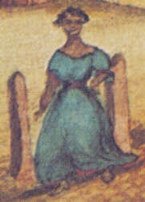
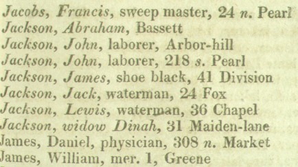

Dinnah Jackson
In January 1779, Dinnah Jackson, "a free negro woman," purchased a lot on the South side of lower Second Street. That transaction identified her as Albany's first recorded African-ancestry real property owner. It also is the first reference to her thus far encountered by the Colonial Albany Social History Project in our long-term and still evolving initiative aimed at comprehending the life of every person who lived in the city of Albany prior to the Industrial Revolution. 
Although her precise origins remain unknown, over the next decades this Dinnah Jackson was one of the more prominent of a small number of free blacks living in the city at the beginning of Albany's first great leap into the modern era.
We believe that this Dinnah Jackson was the wife of one "Old Jack" and probably the mother of "Young Jack" - whose holdings on the hillside above Pearl Street were listed on the city assessment rolls in March and October 1779. Both men were more often referred to as "Jack Jackson." Although by that time, some slaves and others of African ancestry were beginning to be noted in the records of Albany's churches, no mention of Dinnah Jackson has been found in these sources before September of 1790 when Dinnah and Jack witnessed the baptism of John Orion at the Albany Dutch church. Unfortunately, we cannot determine whether that Jack Jackson was Dinnah's husband or her son.
During the 1780s, Albany's free black population not only began to grow - but also was becoming more prominent in the community's historical record. The assessment roll for 1788 listed only the house of "Widow Jackson and son" in the Second Ward. At this point, we might reasonably expect the listing was about this subject. In 1790, the household of "Jack Jackcum," consisting of seven "free people of color" and two white males - also in the Second Ward, accounted for more than 30% of the total number of free blacks counted citywide. Perhaps included within that household on the census, Dinnah Jackson was the housekeeper at the nearby Masonic Lodge and also performed domestic chores at St. Peter's Episcopal Church.
Over the next three decades, this industrious and frugal widow was able to purchase a number of additional parcels of real estate along the North side of Foxes Creek, West of Middle Alley, and the "burial grounds" at/near "Lutheran Hill." Real estate transactions recorded between 1779 and 1819 reveal that she owned as many as a dozen pieces of property throughout the city. Although the locations of all of these parcels could be called marginal, the widow's determination to own multiple plots of city land sets her apart from her Afro Albanian contemporaries.
The city directory for 1814 (but not the first directory in 1813) included Dinnah Jackson among Albany's prominent householders calling her "widow" and listing her residence as 31 Maiden Lane. But for the first time in 1815, she was among those whose italicized names identified them as "free people of color."  Subsequent directories have identified her at that location as well. Her modest home would have been just West of North Market Street - probably abutting the corner mansion of Chancellor John Lansing. Albany artist James Eights later remembered her with a figure standing near her house in one of his classic Albany streetscapes.
A widow for almost two decades and having outlived all of her children, Dinnah Jackson died in the summer of 1818. From her will filed that June, some picture of her family and also an inventory of her extensive holdings comes into view. First, her six grandchildren were the only heirs identified. Granddaughter Dinnah received her bed and bedding, half of the household furniture and clothing, moneys, five lots in the Fifth Ward (Arbor Hill), and a share of another Arbor Hill lot. Jain (Jane), the wife of John Williams, was bequeathed the remaining half of the furniture and clothing and half of another lot. Grandson John Jackson was left a lot on Arbor Hill on his own. Perhaps they had cared for their grandmother in her old age. Three younger grandchildren, Elizabeth, Hannah, and Harry, were left monetary bequests.
The name "Dinnah Jackson" has been encountered many times in the community-based record. Separating her life from that of other same-named contemporaries is only the beginning of the historical detective's task. This sketch aims to reconstitute the life of Albany's first historically visible Afro-American matriarch whose dates embrace the years from perhaps before the 1760s to about 1818.
This sketch of the life of Dinnah Jackson is a prime example of how we approach reconstructing the story of a person's life without benefit of subject-generated resources As an Afro-Albanian woman, people in her situation are among the most difficult to retrieve - in terms of resources. However, as an "everyday person" on the community mainline, a community history would be seriously incomplete without her and the many others in similar situations - in terms of historical resources. Thus we have made a more concerted effort in exposing the sources used in the reconstruction of her life than in most other CAP online biographies. See also explanatory material in "The Jacksons, Lattimores, and Schuylers."
This image is a detail taken from a watercolor painted by James Eights of how he remembered North Market Street in 1805. The woman shown in the lower right corner of the painting would have been standing in front of Dinnah Jackson's home at 31 Maiden Lane. We believe Eights was recognizing a prominent person from his childhood.
Detail from page 53 of The Albany Register and Albany Directory for the Year 1815, compiled and arranged by Joseph Fry (Albany, 1815). The 1815 edition named 2,394 individuals, listed street addresses, and provided some information about occupations. For the first time, the city directory included forty italicized names and explained in the preface that "Those persons whose names are in Italics are free people of colour." Dinnah Jackson was one of that sizable Afro Albanian minority. See Stefan Bielinski, "The Jacksons, Lattimores, and Schuylers: First African-American Families of Early Albany," New York History (October 1996), pp. 373-94.